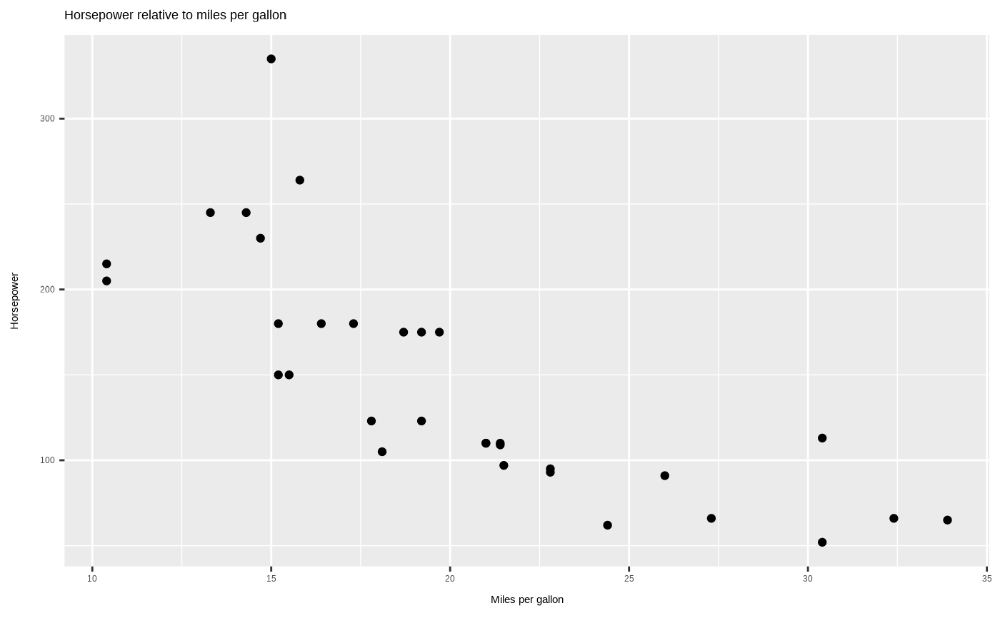
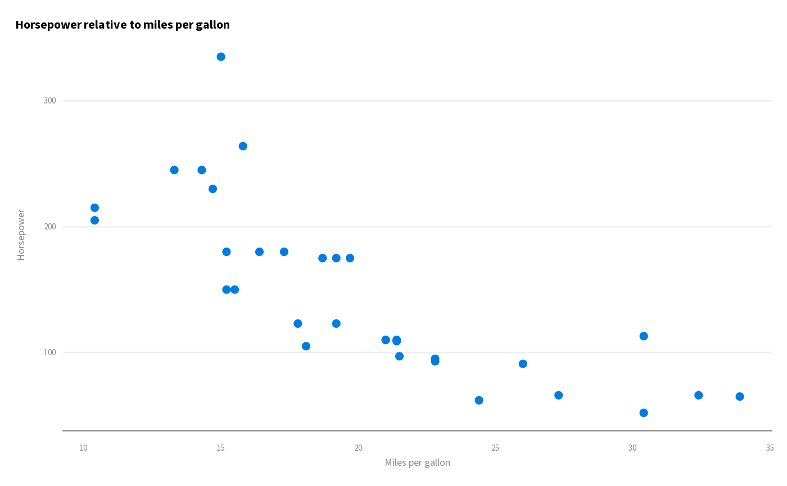

gghdx() gives you the convenience of theme_hdx() without having to
explicitly call it for each plot. It also allows for setting the default
continuous and discrete scales to follow the HDX color scheme, including
default line and point colors and area fills. gghdx_reset() returns
all of these values back to the defaults.
gghdx(
showtext = TRUE,
base_size = 10,
base_family = "Source Sans 3",
horizontal = TRUE
)
gghdx_reset()Arguments
- showtext
logicalIfTRUE, uses the showtext package to add the Source Sans 3 font and runsshowtext_auto()so all future plots in this session will use the font.- base_size
base font size, given in pts.
- base_family
base font family
- horizontal
logicalHorizontal axis lines?
Value
No return value, run for the side effects described in Details.
Details
gghdx() changes global settings for this R session. This includes updating
the ggplot2 default geometries using ggplot2::update_geom_defaults() and
setting global options to scale color and fill for ggplot2:
options("ggplot2.discrete.fill")options("ggplot2.discrete.colour")options("ggplot2.continuous.fill")options("ggplot2.continous.colour")
The default discrete scale is scale_..._hdx() for both fill and color.
For continuous scales, the default is scale_fill_gradient_hdx_mint() for
fill and scale_color_gradient_hdx_sapphire() for color.
Once gghdx() is run, the easiest way to return to the default ggplot2
settings is to run gghdx_reset(). This will make changes by running:
ggplot2::reset_theme_settings(): resets the global theme to default.For all of the options listed above, run
options("option") <- NULL.showtext::showtext_end()to stop using the showtext library if it was activated.Runs
ggplot2::update_geom_defaults()for all geometries inggplot2_geom_defaults().
You can also simply restart your R session to return to the defaults.
See also
gghdx() relies on the following functions:
theme_hdx()as the default theme.load_source_sans_3()to load the font and activate showtext.hdx_geom_defaults()as the default geometries to set withggplot2::update_geom_defaults().scale_color_hdx_discrete()and other family of functions to set standard fill and color scales.
Examples
library(ggplot2)
p <- ggplot(mtcars) +
geom_point(
aes(
x = mpg,
y = hp
)
) +
labs(
x = "Miles per gallon",
y = "Horsepower",
title = "Horsepower relative to miles per gallon"
)
# see the plot using base aesthetics
p

# automatically use the gghdx theme and visuals
gghdx()
p

# get rid of the changes of gghdx
gghdx_reset()
p